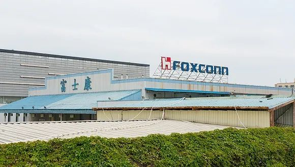
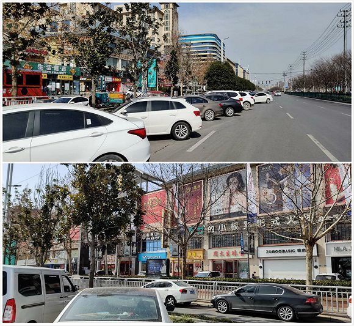

等待返工的人：有人实在不想在家哄孩子了丨图集
原文链接 备份链接 摘要：疫情以来，企业复工日期一再调整，何时能回到办公室成为人们最关心的事情之一。2月10日以来，人们陆续回到岗位，有的经历旅途波折，有人面临待业裁员。经过这个漫长的假期，人们有种恍若隔世的感觉。不管怎样，返岗上班或许是 …

图片来源：图虫
文：财联社 徐杰
“
为加大复工力度，郑州富士康再次增加奖励，新入职员工在满足相关条件后可获现金7000元，目前郑州富士康在厂员工已突破2万人，并且不断有新人面试，同时河南省也在动员员工返工。
”
为加大复工力度，郑州富士康再次增加奖励，新入职员工在满足相关条件后可获现金7000元。根据劳务派遣公司提供的消息，经过近期全方位招聘，目前郑州富士康在厂员工已突破2万人，并且不断有新人面试。
《科创板日报》记者采访还获悉，河南各级人社部门也开始动员组织当地员工返厂。
复工人数不足3万，宿舍附近商铺开门营业
2月22日上午，郑州航空港区天气尚好，当地居民畅先生戴好口罩、做好防护措施后外出，当路过富士康富鑫宿舍区时发现，三天前还闭门停业的商铺已经开门营业，商铺前的马路边停满了轿车，虽然商铺门前不算热闹，但偶尔会有人进出。

商铺后即是郑州富士康富鑫宿舍区，拍摄时间2月21日
“招募中心前大概有二十多人，这些人没排队。”畅先生告诉《科创板日报》记者，当他开车到郑州富士康东门时，东门旁边停满了电动二轮车，虽然接近中午，但东门口只有个别工人进出，东门口对面就是新员工招募中。
与东门口一样，郑州富士康北门人数也很少。畅先生介绍，正常情况下北门、东门到中午会有大量工人进出，因为有工人会结伴在外面吃饭，也有工人出来拿外卖，现在因为疫情防控需要，所有工人只能在厂区内的餐厅吃饭。

郑州富士康北门
自郑州16日通告发布后，因厂区所在地被划定为疫情轻微区域，郑州富士康一面通知老员工返厂、一面招募新员工入职，以提升复工率。2月19日，郑州发布20号通告，明确员工返岗复工要求，客观上为郑州富士康复工创造条件。
2月22日下午，某家为郑州富士康招工的劳务派遣公司工作人员向《科创板日报》记者透露，像他们一样的为郑州富士康服务的劳务派遣公司有好多家，从公司驻厂经理反馈的情况看，目前郑州富士康在岗人数估计在2万人至3万人之间，而且每天都有新人入职。
公开消息显示，富士康此前希望2月底恢复中国大陆50%产能、3月恢复80%产能，眼下距离2月底只有一周，留给郑州富士康的时间不多了。
招工奖励升至7000元，河南人社系统开始行动
《科创板日报》记者调查发现，提升奖励幅度叠加当地政府动员，是近期郑州富士康和河南省地方政府在各自能力范围内的行动。
其实在郑州16号通告发布当天，郑州富士康就发出返岗激励通知，符合要求的员工可获得3000元，此后又将奖励提升至5250元。
2月22日，除前文所述公司外的另一家劳务派遣公司工作人员透露，郑州富士康最新奖励政策：分两次向新员工返费7000元，第一次发放要求是打卡满35天、且在职超过60天发放3000元，剩下4000元在打卡满55天、且在职超过90天时发放。
据了解，有大量招工需求的甲方公司会委派劳务派遣公司招工，劳务派遣公司完成后，甲方公司将按人计算给劳务派遣公司一笔奖励，有些劳务派遣公司为吸引工人应聘，会将该笔奖励的按比例分给工人，而分给工人的这部分奖励就称为返费。如此看来，郑州富士康提升奖励政策，会提升劳务派遣公司招工积极性。
《科创板日报》记者拿到的复工方案显示，郑州富士康针对不同区域的应聘员工有相应要求，分为高、一般、低三个等级，不同等级区域的应聘员工需要提供居家隔离14天证明、承诺书、健康证明等资料。

图为复工方案及健康证明模板
除了劳务派遣公司，河南省人社系统通过动员各地务工人员、组织包车送达等方式为郑州富士康输送劳动力。
《科创板日报》记者获悉，从2月17日开始至今，河南省内各地向郑州富士康运送3481名工人：截至2月18日，登封市累计运送316人返岗；截至2月20日，中牟县已向郑州富士康输送2173人；2月21日，濮阳市护送803人集体返岗，平顶山市运送189人。
接近河南省人社厅的当地人士透露，河南省内人社部门都在行动，组织各地务工人员返岗郑州富士康，返岗人数还在汇总中，而且该行动可能会持续，预计到2月底。
未经授权 禁止转载

原文链接 备份链接 摘要：疫情以来，企业复工日期一再调整，何时能回到办公室成为人们最关心的事情之一。2月10日以来，人们陆续回到岗位，有的经历旅途波折，有人面临待业裁员。经过这个漫长的假期，人们有种恍若隔世的感觉。不管怎样，返岗上班或许是 …
原文链接 备份链接 苹果有两个降压体系：线上和应用商店软件销售。但这二者均不足以完全抵消疫情带来的短期压力 文 |《财经》记者 王凤 编辑 | 谢丽容 苹果受新冠肺炎的影响越来越明显。 2月18日，苹果公司宣布，受疫情影响，全 …
原文链接 备份链接 “人力短缺是最直接和最普遍的问题” 2月18日晚18点15分，从安徽黄山北站开往杭州东的D5580车次准时出发。这是一趟为杭州复工人员定制的“复工专列”，车上的543名乘客全都是返杭就业人员，他们是当前杭州企业急需 …
原文链接 备份链接 【财新网】（记者 王婧）黄埔区是广州市实体经济大区，GDP在广州各区排名第二，规模以上工业总产值占全市四成，领跑广州各区。据黄埔区通报，截至目前，全区近35万工人中，已有六成即23万人返工。 对企业来说，卫生防疫和 …
原文链接 备份链接 记者：杨冰柯 “ 地方政府和企业高效组织，保证正常复工。 ” “咚～咚～咚咚咚……” 舞龙舞狮、敲锣打鼓，2月18日上午九点，义乌国际商贸城与往年一样举行了开市仪式，只是今年的表演人员全都带 …